Text-overlap comparison · several sources
About 15% of the later article’s text (1,214 of its 7,945 words) is also found in 2 earlier works, which don’t overlap with each other.
EARLIER / SOURCE A
LATER / FLAGGED
| Earlier work | What is shared | Cited by the later article | Share of the later article |
|---|---|---|---|
| A. Greenlee, Megan, Narrative Review: Evolving Concepts in Potassium Homeostasis and Hypokalemia, Annals of Internal Medicine (2009), doi:10.7326/0003-4819-150-9-200905050-00008 | 526 words in 23 passages, the longest 52 | no | 6.6% |
| B. Biff F. Palmer, Regulation of potassium homeostasis, Clinical Journal of the American Society of Nephrology (2015), doi:10.2215/CJN.08580813 | The legends of its Figures 3-7 (cell models of K+ transport along the nephron), as the later article's Figure 1 legend, panels (a)-(e) (pp. 2-3), and again as the subsections 'K+ Transport in the Proximal Tubule / Thick Ascending Limb of Henle / Distal Convoluted Tubule' (pp. 3-4). Cited by the later article (ref. 25) only for dietary potassium intake and intercalated-cell reabsorption.. 688 words in 43 passages, the longest 38 | yes | 8.7% |
A passage is a run of at least ten consecutive words in common, allowing isolated single-word differences. The figures are minimums: reworded text and table cells aren’t counted. A work available only as a web page or text has its passages shown as text rather than as images. The passages from each work follow: A, B.
Article A · text-overlap comparison
PAPER A
PAPER B
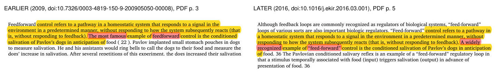
ARTICLE A (2009)PDF p. 2
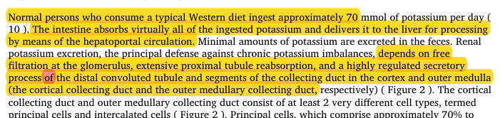
LATERPDF p. 2
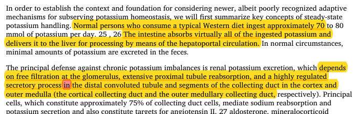
ARTICLE A (2009)PDF p. 2
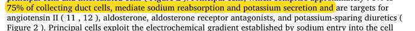
LATERPDF p. 2
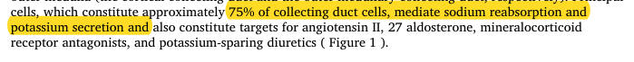
ARTICLE A (2009)PDF p. 2
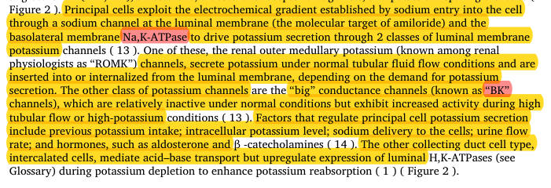
LATERPDF p. 4
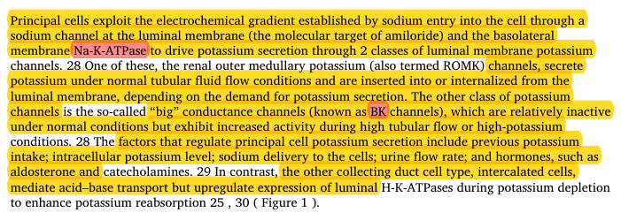
ARTICLE A (2009)PDF p. 2
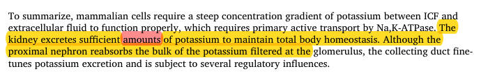
LATERPDF p. 4
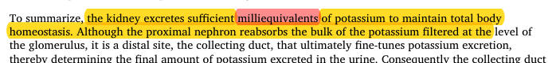
ARTICLE A (2009)PDF p. 2
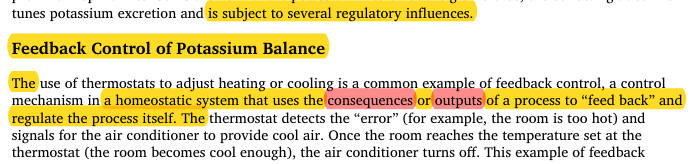
LATERPDF p. 4
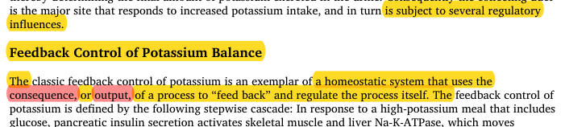
ARTICLE A (2009)PDF p. 3
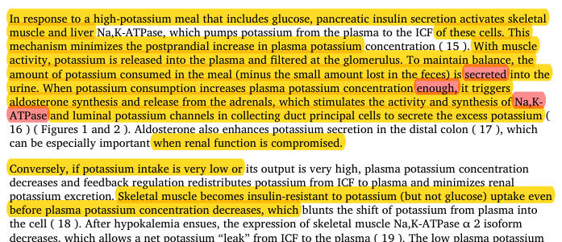
LATERPDF p. 4
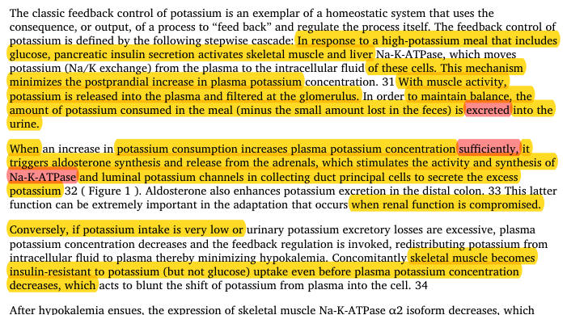
ARTICLE A (2009)PDF p. 5
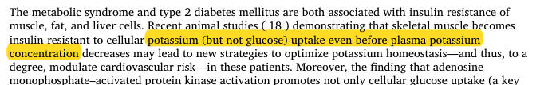
LATERPDF p. 4
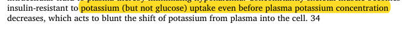
ARTICLE A (2009)PDF p. 3
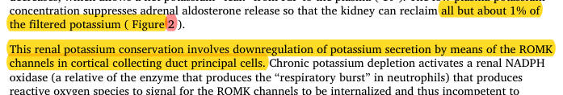
LATERPDF p. 4
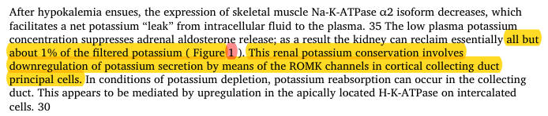
ARTICLE A (2009)PDF p. 3
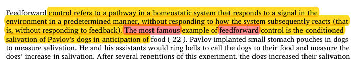
LATERPDF p. 5
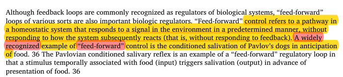
ARTICLE A (2009)PDF p. 4
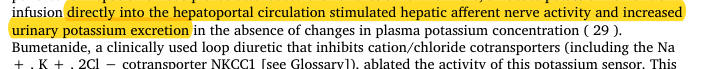
LATERPDF p. 6
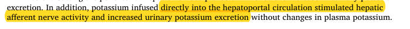
Article B · text-overlap comparison
PAPER B
ARTICLE B (2015)
A cell model for K+ transport in the proximal tubule. K+ reabsorption in the proximal tubule primarily occurs through the paracellular pathway. Active Na+ reabsorption drives net fluid reabsorption across the proximal tubule, which in turn, drives K+ reabsorption through a solvent drag mechanism. As fluid flows down the proximal tubule, the luminal voltage shifts from slightly negative to slightly positive. The shift in transepithelial voltage provides an additional driving force favoring K+ diffusion through the low-resistance paracellular pathway. Experimental studies suggest that there may be a small component of transcellular K+ transport; however, the significance of this pathway is not known. K+ uptake through the Na+-K+-ATPase pump can exit the basolateral membrane through a conductive pathway or coupled to Cl−. An apically located K+ channel functions to stabilize the cell negative potential, particularly in the setting of Na+-coupled cotransport of glucose and amino acids, which has a depolarizing effect on cell voltage. Figure 4. A cell model for K+ transport in the thick ascending limb of Henle. K+ reabsorption occurs by both paracellular and transcellular mechanisms. The basolateral Na+-K+-ATPase pump maintains intracellular Na+ low, thus providing a favorable gradient to drive the apically located Na+-K+-2Cl− cotransporter (an example of secondary active transport). The apically located renal outer medullary K+ (ROMK) channel provides a pathway for K+ to recycle from cell to lumen, and ensures an adequate supply of K+ to sustain Na+-K+-2Cl− cotransport. This movement through ROMK creates a lumen-positive voltage, providing a driving force for passive K+ reabsorption through the paracellular pathway. Some of the K+ entering the cell through the cotransporter exits the cell across the basolateral membrane, accounting for transcellular K+ reabsorption. K+ can exit the cell through a conductive pathway or in cotransport with Cl−. ClC-Kb is the primary pathway for Cl− efflux across the basolateral membrane. Figure 5. A cell model for K+ transport in the distal convoluted tubule (DCT). In the early DCT, luminal Na+ uptake is mediated by the apically located thiazide-sensitive Na+-Cl− cotransporter. The transporter is energized by the basolateral Na+-K+-ATPase, which …
LATERPDF pp. 2–3
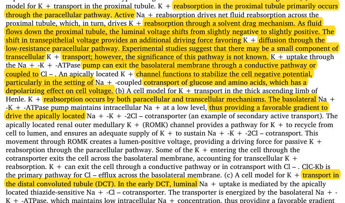
↓ continues on PDF p. 3
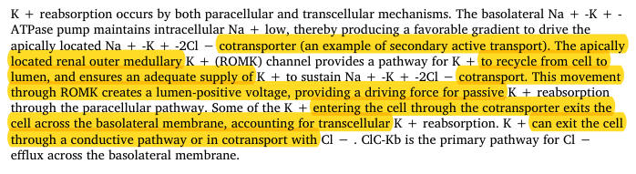
ARTICLE B (2015)
… transporter is energized by the basolateral Na+-K+-ATPase, which maintains intracellular Na+ concentration low, thus providing a favorable gradient for Na+ entry into the cell through secondary active transport. The cotransporter is abundantly expressed in the DCT1 but progressively declines along the DCT2. ROMK is expressed throughout the DCT and into the cortical collecting duct. Expression of the epithelial Na+ channel (ENaC), which mediates amiloride-sensitive Na+ absorption, begins in the DCT2 and is robustly expressed throughout the downstream connecting tubule and cortical collecting duct. The DCT2 is the beginning of the aldosterone-sensitive distal nephron (ASDN) as identified by the presence of both the mineralocorticoid receptor and the enzyme 11β-hydroxysteroid dehydrogenase II. This enzyme maintains the mineralocorticoid receptor free to only bind aldosterone by metabolizing cortisol to cortisone, the latter of which has no affinity for the receptor. Electrogenic-mediated K+ transport begins in the DCT2 with the combined presence of ROMK, ENaC, and aldosterone sensitivity. Electroneutral K+-Cl− cotransport is present in the DCT and collecting duct. Conditions that cause a low luminal Cl− concentration increase K+ secretion through this mechanism, which occurs with delivery of poorly reabsorbable anions, such as sulfate, phosphate, or bicarbonate. Figure 6. The cell that is responsible for K+ secretion in the initial collecting duct and the cortical collecting duct is the principal cell. This cell possesses a basolateral Na+-K+-ATPase that is responsible for the active transport of K+ from the blood into the cell. The resultant high cell …
LATERPDF pp. 2–4
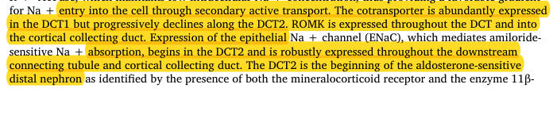
↓ continues on PDF p. 3
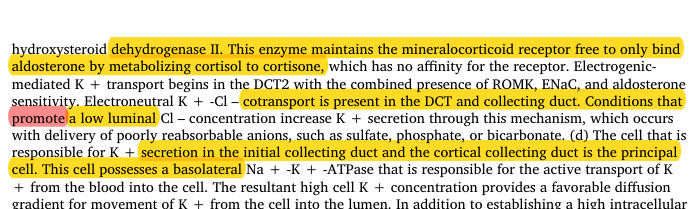
↓ continues on PDF p. 4
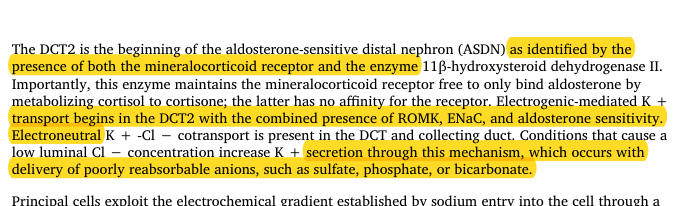
ARTICLE B (2015)
in the initial collecting duct and the cortical collecting duct
LATERPDF p. 3
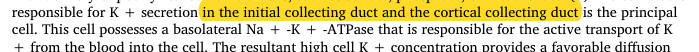
ARTICLE B (2015)
… duct is the principal cell. This cell possesses a basolateral Na+-K+-ATPase that is responsible for the active transport of K+ from the blood into the cell. The resultant high cell K+ concentration provides a favorable diffusion gradient for movement of K+ from the cell into the lumen. In addition to establishing a high intracellular K+ concentration, activity of this pump lowers intracellular Na+ concentration, thus maintaining a favorable diffusion gradient for movement of Na+ …
LATERPDF p. 3
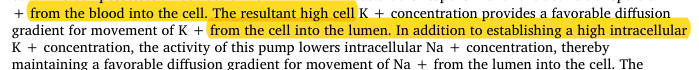
ARTICLE B (2015)
A cell model for K+ transport in the proximal tubule. K+ reabsorption in the proximal tubule primarily occurs through the paracellular pathway. Active Na+ reabsorption drives net fluid reabsorption across the proximal tubule, which in turn, drives K+ reabsorption through a solvent drag mechanism. As fluid flows down the proximal tubule, the luminal voltage shifts from slightly negative to slightly positive. The shift in transepithelial voltage provides an additional driving force favoring K+ diffusion through the low-resistance paracellular pathway. Experimental studies suggest that there may be a small component of transcellular K+ …
LATERPDF p. 3
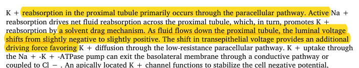
ARTICLE B (2015)
… small component of transcellular K+ transport; however, the significance of this pathway is not known. K+ uptake through the Na+-K+-ATPase pump can exit the basolateral membrane through a conductive pathway or coupled to Cl−. An apically located K+ channel functions to stabilize the cell negative potential, particularly in the setting of Na+-coupled cotransport of glucose and amino acids, which has a depolarizing effect on cell voltage. Figure 4. A cell model for K+ transport in the thick ascending limb of Henle. K+ reabsorption occurs by both paracellular and transcellular mechanisms. The basolateral Na+-K+-ATPase pump maintains intracellular Na+ low, thus providing a favorable gradient to drive the apically located Na+-K+-2Cl− cotransporter (an example of secondary active transport). The apically located renal outer medullary K+ (ROMK) channel provides a pathway for K+ to recycle from cell to lumen, and ensures an adequate supply of K+ to sustain Na+-K+-2Cl− cotransport. This movement through ROMK creates a lumen-positive voltage, providing a driving force for passive K+ reabsorption through the paracellular pathway. Some of the K+ entering the cell through the cotransporter exits the cell across the basolateral membrane, accounting for transcellular K+ reabsorption. K+ can exit the cell through a conductive pathway or in cotransport with Cl−. ClC-Kb is the primary pathway for Cl− efflux across the basolateral membrane. Figure 5.
LATERPDF p. 3
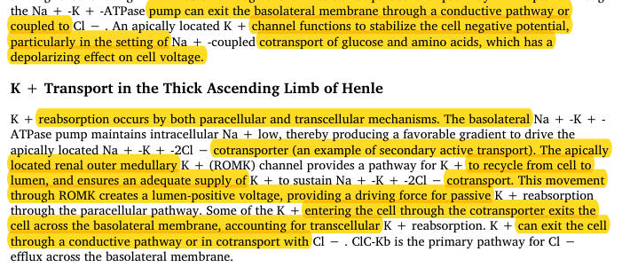
ARTICLE B (2015)
… Na+ entry into the cell through secondary active transport. The cotransporter is abundantly expressed in the DCT1 but progressively declines along the DCT2. ROMK is expressed throughout the DCT and into the cortical collecting duct. Expression of the epithelial Na+ channel (ENaC), which mediates amiloride-sensitive Na+ absorption, begins in the DCT2 and is robustly expressed throughout the downstream connecting tubule and cortical collecting duct. The DCT2 is the beginning of the aldosterone-sensitive distal nephron (ASDN) as identified by the presence of both the mineralocorticoid receptor and the enzyme 11β-hydroxysteroid dehydrogenase II. This enzyme maintains the mineralocorticoid receptor free to only bind aldosterone by metabolizing cortisol to cortisone, the latter of which has no affinity for the receptor. Electrogenic-mediated K+ transport begins in the DCT2 with the combined presence of ROMK, ENaC, and aldosterone sensitivity. Electroneutral K+-Cl− cotransport is present in the DCT and collecting duct. Conditions that cause a low luminal Cl− concentration increase K+ secretion through this mechanism, which occurs with delivery of poorly reabsorbable anions, such as sulfate, phosphate, or bicarbonate. Figure 6.
LATERPDF pp. 3–4
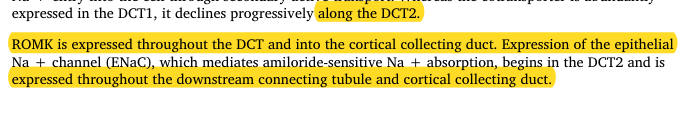
↓ continues on PDF p. 4
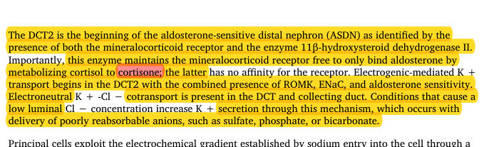